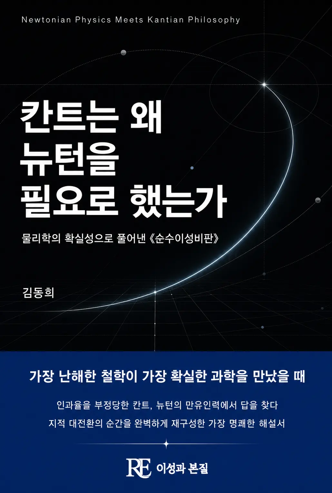

가장 난해한 철학이 가장 확실한 과학을 만났을 때. 뉴턴 물리학의 보편성과 필연성에서 출발해 칸트의 《순수이성비판》을 가장 명쾌하게 풀어낸다.
출간일 2026-08-12
기획 의도
뉴턴의 만유인력은 우주를 계산 가능한 것으로 만들었고, 칸트는 그 확실성 위에서 순수이성의 한계를 물었습니다. 이 책은 뉴턴의 물리학과 칸트의 인식론을 함께 읽으며 '왜 자연은 수학의 언어를 따르는가'라는 질문을 추적합니다.
예상 독자
칸트 철학에 관심 있는 독자, 과학과 이성의 관계를 사유하고 싶은 독자.
목차
제1부. 두 세계의 수수께끼
- 1장 밤을 지새우게 하는 질문
- 2장 세상에서 가장 확실한 지식
- 3장 물리학자 칸트, 그 확실성 안에서 보낸 이십 년
- 4장 끝나지 않는 전쟁
- 5장 이 책이 진짜 묻는 것
- 6장 머리로만, 눈으로만 믿다가
- 7장 흄의 폭탄
- 8장 이성을 법정에 세우다
- 9장 코페르니쿠스처럼 뒤집다
- 10장 마음은 거울이 아니라 렌즈다
- 11장 보이는 세계와 그 너머
제2부. 느낌의 뿌리, 시간과 공간
- 12장 태어날 때 이미 깔려 있는 것
- 13장 세상이 들어오는 두 개의 문
- 14장 공간을 둘러싼 또 하나의 전쟁
- 15장 공간은 바깥에 없다
- 16장 시간은 흐르지 않는다
- 17장 수학은 왜 틀리는 법이 없는가
- 18장 감각이 닿는 끝
제3부. 우리는 어떻게 아는가
- 19장 보는 것과 아는 것은 다르다
- 20장 머릿속의 열두 서랍
- 21장 재고 헤아리는 눈
- 22장 ‘원인과 결과’라는 색안경
- 23장 사라지지 않는 무언가
- 24장 서로 밀고 당기기에 하나의 세계다
- 25장 뉴턴의 비밀을 풀다
- 26장 자연법칙을 만드는 것은 인간이다
- 27장 흩어지는 나를 붙드는 힘
- 28장 개념과 감각 사이의 통역사
- 29장 진짜 지식과 말장난
- 30장 이 책이 진짜 묻고 싶었던 것
- 31장 지성의 국경선
제4부. 이성의 환상, 그리고 삶
- 32장 선을 넘는 이성
- 33장 영혼은 불멸하는가
- 34장 우주에 끝이 있는가
- 35장 물질은 끝까지 쪼개지는가, 그리고 젊은 칸트의 우주론
- 36장 나는 자유로운가
- 37장 신은 증명될 수 있는가
- 38장 이제, 어떻게 살 것인가
- 39장 아름다움이라는 다리
- 40장 진선미, 하나의 정신
도서목록으로 돌아가기